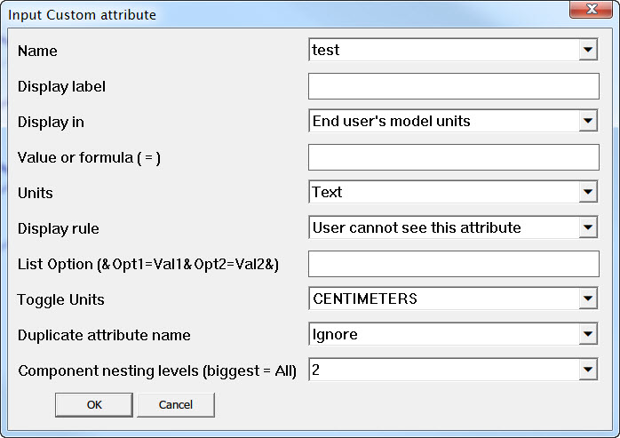

Описание
Плагин для Sketchup 2014 Pro или выше для задания динамических атрибутов выделенным компонентам в модели включая компоненты во всех уровнях вложенности
Список функций:
- Добавление стандартных атрибутов
- Добавление собственных атрибутов
- Работает только из компонентами
- Динамическое изменение выбора уровня вложенности компонентов в зависимости от выбранного
Использование
Использовать можно как через панель инструментов

или главное меню программы
Extension > Add attribute
- Add attributes inputbox - Включает диалоговое окно с выпадающим списком для выбора атрибута, который необходимо добавить.
- Help (Справка) - Открытие файла справки (этой страницы).
Для работы плагина нужно выбрать компоненты. Если ничего не будет выбрано, то появится предупреждение:

При выборе не только компонентов также появится предупреждение о необходимости выбора только компонентов.

Если выбор сделан правильно, то появится диалоговое окно, где можно выбрать атрибут для задания ему значений. Это может быть собственный (Custom...), выбор из списка стандартных и возможность переключение единиц измерения в компонентах при задании атрибутов (Toogle Units).

При задании собственного атрибута (Custom...), появится дополнительное окна для ввода имени.

Имя атрибута имеет ряд ограничений. При вводе неправильного формата имени будет выдано предупреждение с пояснением допущенной ошибки при вводе. Например, ошибка имени атрибута, при которой оно начинается цифрой.

Ниже представлен список всех ошибок ввода имени с пояснениями в скобках.
- Attribute name can't be empty (Не должно быть "пустым", тоесть не содержащим ни одного символа)
- Attribute name can't contain spaces (Не должно содержать пробелов)
- Attribute name can only contain Latin letters and numbers (Состоять только из символов Латинского алфавита и цифр)
- Attribute name can't begin with an underscore (Не должно начинаться символом подчеркивания)
- Attribute name can't begin with an number (Не должно начинаться с цифры)
- You may not name an attribute TRUE or FALSE (Не должно совпадать со словами TRUE или FALSE)
Если введенное имя совпадает со стандартным атрибутом, то задание значений атрибутов будет как у стандартного с этим именем. Ниже показано соответствие полей ввода плагина и встроенного в Sketchup (Window > Component Attributes) инструмента задания атрибутов на примере собственного атрибута. Для стандартных атрибутов диалоговое окна будет содержать другие поля ввода в зависимости от атрибутов.

Установка
Плагин работает только в Sketchup 2014 Pro или выше. Установите новую версию программы перед использованием плагина. Installing Ruby Plugins in SketchUp